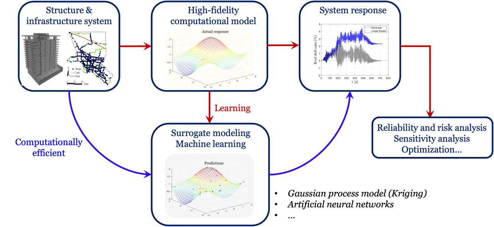
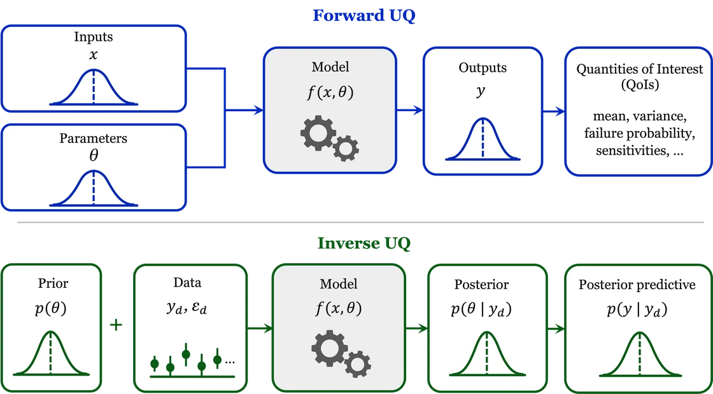
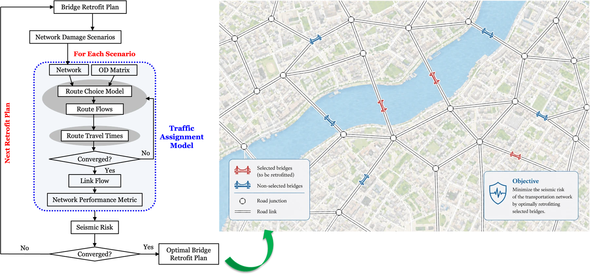
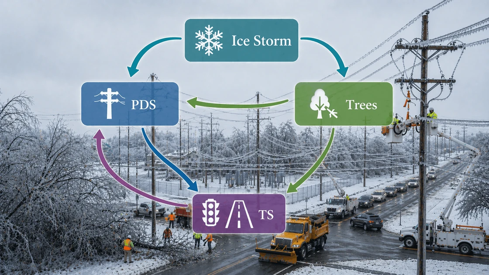

Complex engineering simulations are often too expensive to run repeatedly for tasks like reliability analysis, sensitivity analysis, and design optimization. We develop surrogate modeling and machine learning methods that make these tasks computationally feasible while maintaining accuracy. Our work addresses fundamental challenges in this area, including how to effectively combine data of different fidelity levels, how to learn from limited or censored observations, how to incorporate physics constraints, and how to capture complex input-output relationships in high-dimensional problems.

Keywords: Gaussian process, multi-fidelity modeling, physics-constrained surrogates, dimension reduction, limited data, high-dimensionality
Engineering systems are subject to various sources of uncertainty, and quantifying their effects is essential for reliable analysis and design. Our work in forward UQ focuses on efficiently propagating input uncertainties through complex models to estimate output statistics, failure probabilities, and sensitivity indices. In inverse UQ, we develop methods for calibrating model parameters and updating predictions using observational data through Bayesian inference frameworks. By leveraging surrogate models and advanced sampling techniques, we make these computationally demanding tasks feasible for real-world engineering applications.

Keywords: reliability analysis, advanced stochastic simulation, Bayesian inference, variational inference, generative model, sensitivity analysis, small failure probabilities
Understanding how natural hazards affect large-scale infrastructure networks and making sound decisions to reduce that risk requires methods that can operate at the system level. We develop scalable computational frameworks for network-level risk assessment. Our work spans hazard types including earthquakes, hurricanes, and flooding, and infrastructure types including transportation networks and power systems. We are particularly interested in how risk insights can be translated into actionable decisions, such as bridge maintenance planning, retrofit prioritization, and resource allocation.

Keywords: seismic risk, hurricane wind risk, transportation networks, bridge deterioration, Bayesian updating, graph neural networks, retrofit prioritization, equity-aware planning
Modern infrastructure systems do not fail in isolation. Disruptions in one system can cascade into others, and multiple hazard types can interact to produce compounding effects. We study the resilience of interdependent infrastructure networks, such as coupled power and transportation systems, under multi-hazard scenarios. Our research models how failures propagate across system boundaries and how the dynamic interaction between hazards and networks unfolds over time. This includes work on ice storm impacts on power-transportation systems, flood-transportation dynamic interactions, and recovery planning for interconnected systems.

Keywords: power-transportation interdependency, ice storm resilience, flood modeling, cascading failure, recovery planning